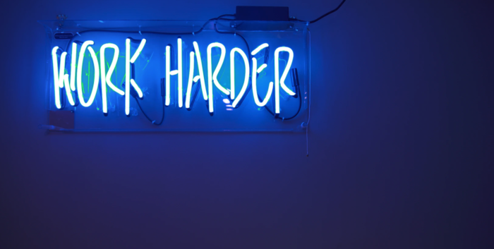

Chapter 5: Build rock-solid routines

How to build rock-solid routines and achieve your goals on near-autopilot
“I don't wait for moods. You accomplish nothing if you do that. Your mind must know it has got to get down to work.”
—Pearl S. Buck, American Writer/Novelist
Routines are the building blocks to success. Without routines, you'll never achieve your goals and live a super-sucky life. We don't want that, do we?
So now that you’ve identified your long-term goals to the Board Game of Life—and added your short-term goals to your kanban—you need routines to make your dreams happen.
In this chapter, you’ll learn:
- how uber-productive people leverage routines to produce incredible results—often working just a few hours a day.
- simple ways to create daily routines.
- how to implement your routines to achieve maximum results, in the minimum amount of time.
Keep reading, or click a link below to skip ahead:
Establish hard edges to your day—and adhere to them, ruthlessly
Start and stop work at the same time, every day. You’ll find you are more efficient, effective, and less stressed when you refuse to work outside your regular work hours.
For some, establishing hard edges is easy. For others—especially freelancers and people who work remotely—it’s difficult. Use an alarm clock, or reminder app on your phone or computer that tells you it’s time to stop working.
Setting hard edges also helps you leverage Parkinson’s Law, which states that “work expands so as to fill the time available for its completion.”
In other words, if you need to finish a task by the end of today, and your “end of today” (i.e. your “hard edge”) is 5 p.m., you’ll do it by 5 p.m. If your “end of today” is midnight, you’ll get it done by midnight.
We tend to put things off to the last-minute, which is why you should...
Do your most rewarding and challenging work first
Do your proactive work first, before life gets in the way. Remember those items you moved from your Board Game of Life to your kanban? Those are your most important goals. Do those first. I cannot stress how much of a positive change this will create in your life.
When I worked at Google, I would bike to work at 7:30 a.m., about an hour and a half earlier than anyone else. (I also left the office earlier at 4 p.m.; my Momma raised a gentleman, not a workaholic.)
I’d get way more done during the first 90 minutes than the rest of the day because there weren’t any distractions. Once I realized this, I always worked on the most important task first because it helped me think deeply and work towards my goals.
When I quit working for other people, I ruthlessly focused on the one “big goal” each morning. That way, when life got in the way—and it most certainly did—I could rest easy, knowing I’d accomplished what mattered most.
Here’s my usual morning routine now:
- Wake up at 5:30 a.m.
- Meditate for 10-20 minutes.
- Write for 25 minutes; take a 5-minute break.
- Write for another 25 minutes; take a 5-minute break.
- Exercise for 30-60 minutes (either running or high-intensity interval training).
By 9 a.m. I’ve accomplished a lot. In fact, I could spend the rest of the day on the couch in my underpants—devouring pizza, Cap'n Crunch, and Girl Scout cookies while watching reruns of Full House—and feel pretty damn good about myself. That’s the image of success, baby—so long as you do your most important task first.
Of course, the best way to determine your most important task is to...
Plan tomorrow, today
Remember your kanban? At the end of each day, think about what you want to accomplish tomorrow, and add it to the “To-Do” column of your kanban. The next morning, you can choose to move the items you added to your “Doing” column.
Stupid easy. Super effective.
This accomplishes two things: first, it allows you to empty your mind at the end of the day so you can enjoy your evening; second, it ensures you start tomorrow with a clear head. The amount of headspace this provides is staggering; try it today and see how well it works for you.
Once you’ve set your plan for tomorrow, stick to it. And the easiest way to stick to your plan is to...
Be proactive, not reactive
Proactive: creating or controlling a situation by causing something to happen rather than responding to it after it has happened. Reactive: acting in response to a situation rather than creating or controlling it.
Distraction makes you reactive; purpose makes you proactive. Proactive work helps you achieve your goals. Reactive work is the crap you end up doing instead.
Tell me if this sounds familiar: you wake up, prepared to kick ass. You know exactly what you need to do.
And you’re just about to get started… but first, you think, “I'll just check my work email for a second.”
Because that’s important, right? Riiigght.
So you go through your emails… and man, that was hard work, right? Riiigght.
Time to take a break. Better check your personal email. And Facebook. And…
Let’s stop that nonsense right now.
Because there's reactive work and proactive work.
Reactive work includes answering emails, moving stuff around, and browsing. You never complete reactive work; it just piles up, higher and higher, until it crashes down and you’re left wallowing in a dungheap of distraction and disarray.
Proactive work, on the other hand, happens when you work on a clearly defined task from your kanban. Proactive work aligns with your purpose and helps you achieve your dreams; when you complete real work, you feel fulfilled.
Do more proactive work. Then play. Really play. Hike, eat, party, paint, have sex, play tag, smoke a cigar, go to the water slides, stage-dive into a mosh pit at a Slayer concert—whatever gets your pulse going.
Just go out there. Do the work. And call it a day.
Because God forbid you suffer from...
Attention residue—a nasty byproduct of procrastination
Do you know that nagging feeling you get, when you don’t finish what you started? That’s called attention residue.
Attention residue: the extent to which a person’s attention is only partially focused on a current activity (task or social interaction) because a prior activity is still holding part of his or her attention. (Definition taken from the study cited below.)
And according to a study by Sophie Leroy—published in the journal Organizational Behavior and Human Decision Processes—attention residue is a real thing.
This residue—or as I prefer to think of it, mental sleaze—gets all up in your brain’s business when you prematurely switch tasks.
The study says you need two things to wipe your mind clean of attention residue: completion and closure.
- Completion means the job is done.
- Closure means you’re mentally done with the job.
Want a quick example?
Let’s say you’re in a mayonnaise-eating contest and need to eat just one more jar to win.
Halfway through the jar, though, you projectile-vomit all over the first row of the audience. The referee throws a penalty flag; you’re disqualified.
“Screw it,” you think. “I didn’t want to win, anyway.”
That’s closure—not completion.
Now, let’s rewind. Rather than blow chunks, you breeze through the final jar. But while you did, Sid Delicious—the reigning champ—rallied through two jars and took first place.
On the car ride home—saturated with failure and hydrogenated oil—you can’t help but wonder what went wrong. “If only I’d trained harder,” you think.
That’s completion—not closure.
In the article, Leroy—who I’m sure would be thrilled with the above example—argues that, without completion and closure, we cannot focus on our next task.
The lesson?
You need completion and closure before moving on to your next task. And your kanban makes this easy.
- To get completion, set up each task as a SMART goal in your kanban. (Remember, SMART stands for specific, measurable, attainable, realistic, and timely.)
- To get closure, move your Trello card from the “Doing” to the “Done” column.
See how that works?
Your kanban lets you clearly define your task (making it clear when you’ve completed it) and gives you closure by visually and physically moving the card to the “Done” column.
Please do not underestimate the power of completion and closure. They ensure progress, improve your focus, and boost your morale. Try it today.
Use triggers to effortlessly build routines—and develop good habits on near-autopilot
Trigger: causes (an event or situation) to happen.
A trigger is what tells your brain to go into automatic mode. It’s the first step in any habit.
For example, you don’t actively think about brushing your teeth, do you? Of course not. When you pick up your toothbrush, for example, a trigger tells your brain, “Hey, it’s time to brush my teeth. This is a simple routine, so don’t think about it; just do it.”
Triggers help us perform complex tasks—like cooking, driving, and brushing our teeth—without frying our brains. Once we develop a routine, we don’t have to think about each action; it just happens.
In his excellent book The Power of Habit, Charles Duhigg reveals the three steps in what he calls a habit loop.
Those steps are:
- The Trigger (or Cue): the event that starts the habit.
- The Routine: the habit or behavior that you perform.
- The Reward: the benefit associated with the behavior.
Duhigg explains that once you create a new habit, it does not require conscious effort to continue.
In other words, good habits help you achieve your goals—without thinking about it. That’s right: self-improvement on autopilot.
As we saw earlier, you start the day with a finite amount of willpower. And when you create positive habits, you preserve willpower.
But the opposite is also true. Bad habits drag you off-course—and getting back on course drains your willpower.
To change a habit, Duhigg explains, you need to:
- Identify the trigger.
- Identify the true reward.
- Replace the routine.
Here's a quick example:
Batman is a badass. But early in the morning—after a night of fighting crime—Batman returns home, exhausted, and plops down in his bat-chair. Watching TV, the Joker appears. He’s rigged the Gotham Comedy Store with explosive silly putty.
Batman sighs. “Here we go again…” he thinks, and reaches under the bat-desk for a bottle of bat-bourbon. He unscrews the top, raises it to his lips, and takes a long, slow pull. Then—bat-bourbon in hand—he hops back into the Batmobile, and races off to face the Joker.
Holy boozehounds, Batman!
Yep, the Dark Knight’s showing signs of alcoholism. Let’s look at how ole’ Batsy handled this situation, according to Duhigg’s framework:
- The trigger: Seeing the Joker.
- The real reward: To escape the pain of dealing with the Joker.
- The routine: Drinking bourbon.
Hmm, let’s help the Caped Crusader out—before he wraps the Batmobile around a streetlamp.
As you can see, Batman’s real reward is to dull the pain of dealing with the Joker (the trigger). Bourbon is just the routine he’s developed to deal with the trigger; by switching the routine, Batman will be able to lay off the sauce.
Keep in mind: the best way for Batman to achieve the real reward isn’t bat-bourbon—it’s putting the Joker behind bars. Booze has nothing to do with the real reward; it’s just become a routine. And routines can be replaced.
So the next time he sees the Joker, rather than reach for a bottle of booze, Batman should visualize himself putting the Joker behind bars.
Now his habit looks like this:
- The trigger: Seeing the Joker.
- The real reward: To escape the pain of dealing with the Joker.
- The routine: Arrest the Joker.
Much better. That should keep Batman out of the drunk tank.
Key point: Whenever you want to change a habit, identify the trigger, the real reward, and the routine—then swap the destructive routine for a positive one.
Use triggers to build positive, effective routines
Good triggers are vital to building effective routines. For example, when I was training for my first 50k, I put my running clothes on the floor next to my bed. I had to step over my running clothes every morning—and as a result, I never missed a workout.
Putting my running clothes beside my bed is an example of an associative trigger. Associative triggers—such as listening to the same music or arranging your desk in a certain way—tell your mind it’s time to get down to work.
Your kanban is a powerful associative trigger. When you look at your kanban board throughout the day, you’re building associative triggers to ensure you complete your most important tasks. Like stepping over my running clothes in the morning, your kanban is front-and-center, reminding you to focus on what matters.
Respect your ultradian rhythms
Ultradian rhythm: regular period or cycle repeated throughout a day.
Respecting your ultradian rhythms will make you happier—and more effective.
Research done by Peretz Lavie and Associates from the Institute of Technology, Haifa, show that we work optimally in roughly 90-minute cycles; after that, we get distracted.
The study suggests you work for 90 minutes then take 20 minutes off. During your 20-minute break, get away from your work; go outside, talk to friends, exercise—anything that gives your brain and body the time it needs to recharge—before you get back to work.
Key point: working 90 minute periods, then rest for at least 20 minutes to recharge.
To quickly recap, you need to:
- Establish hard edges to your day.
- Develop routines that provide completion and closure.
- Use associative triggers to help you stick to your routines.
- Work for 90 minutes; take a break for 20.
Want to turbocharge your habits’ effectiveness? Then I suggest you try...
Hitchhiking habits: a simple, proven method to accomplish more
As you and I both know, developing a new habit is hard. Sure, we have great intentions—but turning intentions into habits is easier said than done.
So why do we struggle to create habits, even when we know they’re for our benefit? The answer lies in how your brain is wired.
Your brain is made up of cells called neurons. Neurons process and transmit information to other neurons via electrical and chemical signals. The pathway neurons follow from one to another are called synapses.
By analogy, your brain is like an interstate highway. On this highway, each neuron is a car, and each synapse is an exit route along the highway.
The first time a synapse is used, the exit route is like a rough, rocky path. But after using it a few times, it smoothes out some; eventually, the path becomes paved and can be traveled with ease.
A new routine is a rocky road; an established habit is a well-paved exit. A new routine’s hard to get through; an established habit is so easy you can use cruise-control.
Developing new synapses (i.e. habits) can be difficult; but once developed, they're damned hard to quit. That's why it's so hard to pick up new good habits—and eliminate bad ones.
So rather than develop a new habit from scratch, we're going to use a technique that I call habit hitchhiking.
Here's how it works: take an existing habit—such as waking up—and connect a new habit to it. In the freeway analogy, if one habit is a well-worn route that you're traveling on, you allow your new habit to “hitch” a ride. This saves you the trouble of having to pave a new road. Plus, you’re more likely to stick to your new habit.
For example, I wanted to start meditating. And to get started, I just had to sit my happy-ass down, close my eyes, and do nothing for a few minutes every day. Simple, right?
Yet I struggled. Using the highway analogy, I was trying to pave a new road, which takes time and effort. So instead, I simply let my meditation habit “hitchhike” along with another habit: getting up in the morning.
Rather than just say “I'm going to meditate every day” (which, as you've already learned, is not a SMART goal). I say “when I wake up in the morning (already one of my daily habits), I’m going to meditate in the living room for at least 1 minute.”
The result? It worked right away, and I finally stuck to my new habit—thanks to the power of hitchhiking habits.
But that wasn't enough. Just like having one person in the car is a waste of space, having one or two habits in the same car is a waste of resources. So I wanted to fill this car up with powerful, effective habits. Shortly after I established my meditation habit, I invited another hitchhiker to ride along: writing.
So now my habits look like this:
- If I wake up in the morning, then I meditate in the living room for at least 1 minute.
- If I meditate, then I write at my computer for at least 1 minute.
Groovy. As you can see, we've added two highly beneficial habits. (You may also have noticed how I’m using an if-then construct. We’ll cover this powerful secret in Chapter 7.)
Now, you may wonder why I've only selected one minute for each habit. The answer is that, psychologically speaking, getting started is often the hardest part. We can't help but visualize the amount of time and effort we're going to spend; because of that, we don't even start.
One of life’s sad ironies is that we often spend more time worrying over a task than actually doing it. So, by setting a 1-minute minimum for each habit, I'm making it as easy as possible to start.
Let's take this a step further and add another hitchhiker: exercise. This new habit would say “If I write, then I will exercise for at least one minute.”
- If I wake up in the morning, then I will meditate in the living room for at least 1 minute.
- If I meditate, then I will write at my computer for at least 1 minute.
- If I write, then I will exercise for at least one minute.
Alright, now we're hitchhiking! You can stretch this out as long as you like, and even include breaks as a habit. For example:
“If I'm done exercising, then I will take a shower. If I take a shower, then I will relax for 30–60 minutes.”
Remember your kanban?
Put each of your new habits in your kanban, and move them from “To-Do” to “Doing,” and eventually “Done” throughout your day.
At the end of each day, add each of these habits into your kanban. By writing down your goals—as you've already seen—you are more likely to act on them. And by moving those cards into your “Done” column, each and every day, you’ll enjoy a daily dose of completion and closure, which increases your resolve to do it the next day. This creates a wonderfully virtuous cycle, which strengthens your habits.
Once those habits become automatic, stop adding the cards to your kanban. For example, I no longer add “Meditate for at least one minute” in my kanban— it's automatic.
Once your routines are set up, distractions will attack you from every angle. We’ll cover proven methods to block distractions in the next chapter.
Summary:
In this chapter, you learned that the most successful people in the world create and stick to daily routines.
You learned about closure and completion—and that you need both before moving to your next task. You saw the best way to get closure and completion was to add the task to your kanban; this way, you see that it’s done, and gain closure by moving the task to your “Done” column.
You found out about ultradian rhythms, and why you should work for no longer than 90 minutes at a time, with a 20-minute break in between.
You saw the power of habits, and how to change habits by identifying the cue (or “trigger”), the real reward, and the routine. Once you’ve identified all three, swap the routine for something else that still provides the same reward.
Lastly, you learned about “habit hitchhiking” and why it helps you combine multiple habits for maximum results.
What you need to do next
- Set up—and stick to—a daily routine.
- Use emotional (positive and negative) triggers. Example: use the same place to work, listen to the same music, etc.
- Use ultradian rhythms; work no more than 90 minutes at a time.
- Show up to work—even if you don’t feel like it.
- Do what matters most, first. Your willpower decreases throughout the day.
- Establish hard edges to your day—and ruthlessly adhere to them.
- Do your most rewarding and challenging work first.
- Plan tomorrow, today.
- Use the “habit hitchhiking” technique to combine multiple habits.